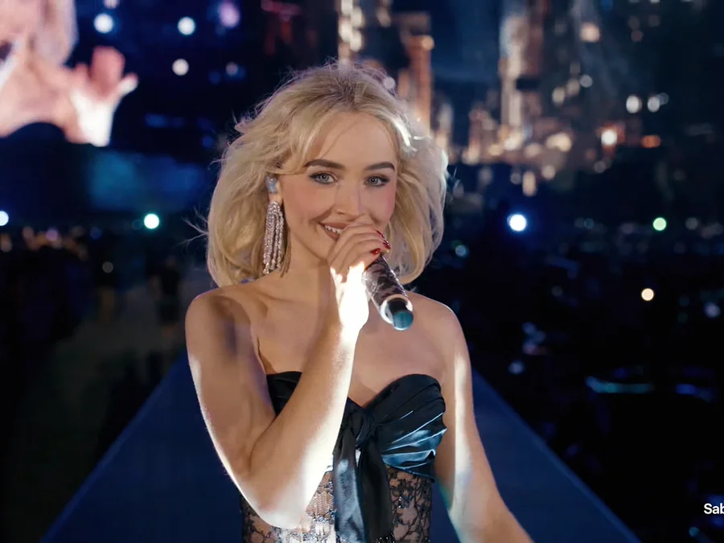
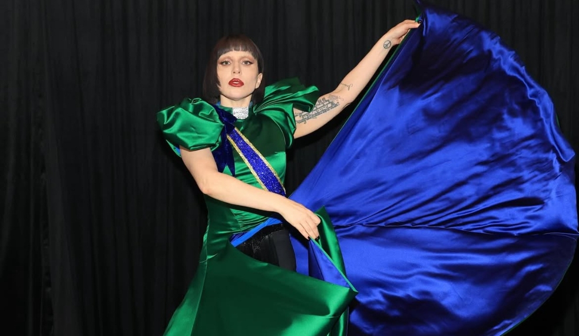
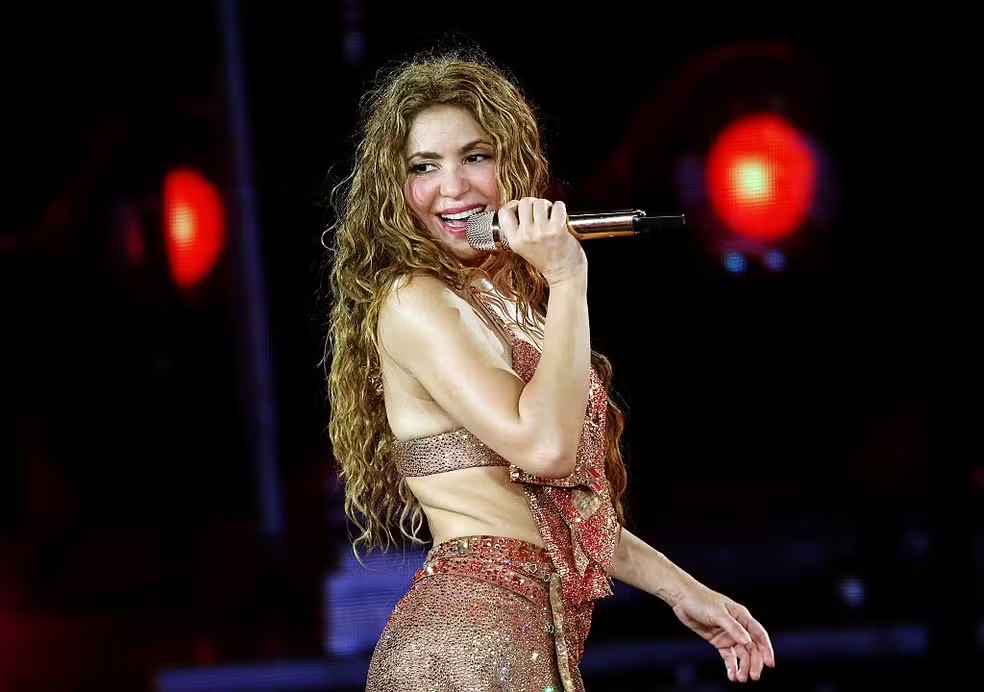
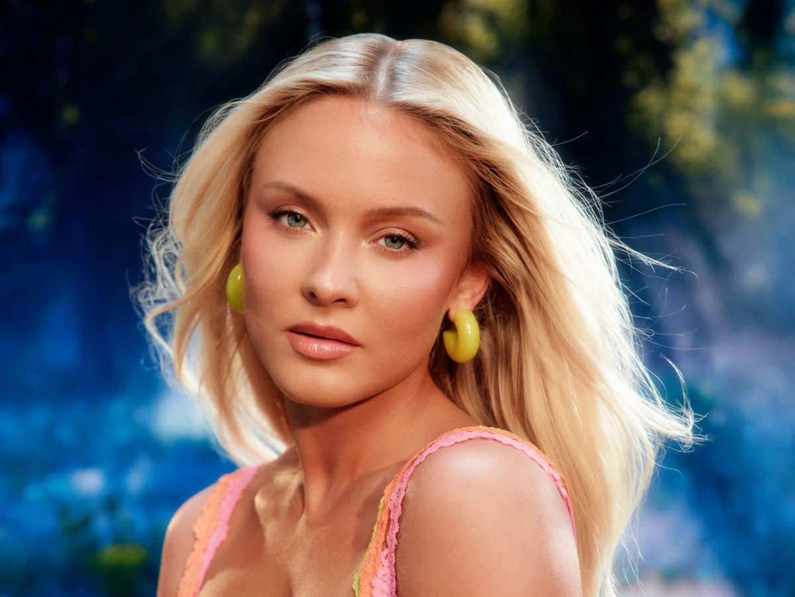
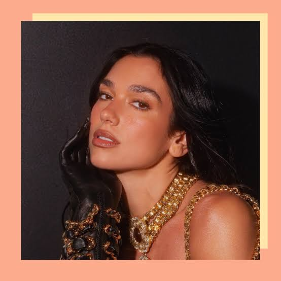

Olivia Rodrigo
Fenômeno do pop global, conhecida por composições viscerais e confessionais sobre desamor e juventude, unindo a vulnerabilidade do pop à energia crua do pop-punk dos anos 2000.

Sabrina Carpenter
Ícone do pop moderno, conhecida por composições espirituosas e sedutoras, voz suave e uma estética glamourosa marcada pelo humor afiado e performances envolventes.
Ariana Grande
Powerhouse vocal do pop e R&B, famosa por seu alcance vocal impressionante, melismas impecáveis e estética marcante que une elegância retrô a hinos de empoderamento e vulnerabilidade.
Billie Eilish
Pioneira do alt-pop contemporâneo, famosa por seus vocais sussurrados e introspectivos, produções sombrias e inovadoras, e uma estética melancólica que redefiniu a música jovem.
Demi Lovato
Potência vocal do pop-rock, reconhecida por suas interpretações profundas e passionais, letras honestas sobre superação e vulnerabilidade, e uma fusão marcante de pop, rock e R&B.

Lady Gaga
Ícone camaleônico da cultura pop, reconhecida por seus vocais teatrais, ousadia artística e capacidade única de transitar entre o pop eletrônico extravagante, o jazz clássico e o rock visceral.

Shakira
Lenda do pop latino e ícone global, mundialmente famosa por suas composições contagiosas, alcance vocal único, dança inconfundível e uma fusão brilhante de ritmos latinos, árabes e rock.

Zara Larsson
Força do dance-pop sueco, famosa por seus vocais potentes e cristalinos, presença de palco eletrizante e um catálogo repleto de hinos vibrantes, empoderados e extremamente contagiantes.

Dua Lipa
Rainha do nu-disco e do dance-pop moderno, conhecida por seus vocais graves e aveludados, estéticas retrô impecáveis e um catálogo repleto de hinos elegantes feitos para as pistas de dança.
Britney Spears
Eterna Princesa do Pop e ícone cultural, famosa por suas performances eletrizantes, coreografias marcantes e um catálogo de sucessos e vocais sussurrados que definiram a música dos anos 2000.
Madonna
Incontestável Rainha do Pop e mestra da reinvenção, famosa por desafiar tabus culturais, performances revolucionárias e uma sonoridade dance-pop que dita os rumos da música há décadas.
Taylor Swift
Mestra da composição e titã da indústria musical, famosa por sua narrativa confessional detalhada, capacidade única de reinvenção de eras e um império pop que redefiniu o mercado global.